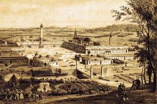

Борис Акунин
Мой календарь
Мечты о прекрасном, даже если они абсолютно утопические, все равно полезны. Потому что они включают воображение, мозг нацеливается на нечто пускай нереалистичное, но хорошее, и в результате из розовых облаков может пролиться плодоносный дождик, от которого вырастет зеленая трава, а может, и цветы.
Сегодня день рождения великого утописта Шарля Фурье (1772 - 1837).
Это был такой кипучий Манилов, напридумывавший кучу всякой прекраснодушной чепухи. Поскольку у Шарля было много энергии и к тому же он обладал незаурядным талантом фандрейзерства (выражаясь по-современному), он даже сумел воплотить свой проект в жизнь.
Идея была совершенно дурацкая, но очень красивая.
Строим город-дом под названием «фаланстер».
Заселяем туда коммунаров, и они дружно трудятся, культурно отдыхают, любят друг друга и нравственно усовершенствуются, потому что никто никого не эксплуатирует, не обманывает и не подвергает насилию.
На дворец с картинки средств не нашлось, но на нечто более скромное Фурье донатов насобирал. Купил землю в Америке, пригласил добровольцев. И они, конечно, скоро между собой пересобачились, потому что люди все разные и жить колхозом им неполезно.
Неудачник Фурье потом до конца жизни писал вдохновенные трактаты. Семьи не завел, существовал в скудости, все свои скромные заработки тратил на кормление кошек и выращивание комнатных цветов. Цветы, в отличие от фаланстеров, дисциплинированно росли в горшках и самоусовершенствовались.
Но я фантазеру Шарлю Фурье очень благодарен, потому что в момент, когда надо было решать, как жить дальше, вычитал у розового мечтателя одну мысль. Об отношении к работе.
Работу нужно выбирать только такую, которая доставляет тебе эротическое удовольствие - вот в чем состоит гениальная в своей простоте и верности идея.
В фаланстере большое жалованье полагалось платить лишь за ту работу, которой никто не хотел заниматься, а нормальным считалось относиться к делу, как к любовнику, с которого денег не берут, потому что любят.
Вдохновившись этой трудовой этикой, то есть трудовой эротикой, я и решил: построю себе собственный фаланстер и буду работать только по любви. Ушел со службы и стал писать книжки.
И вы от красивых мечтаний не отмахивайтесь. Раз они красивые, что-нибудь в них да пригодится.